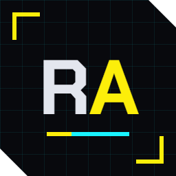
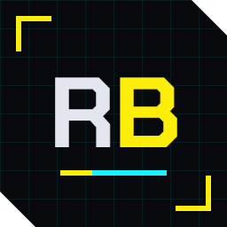
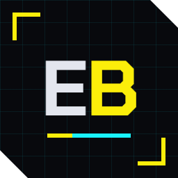
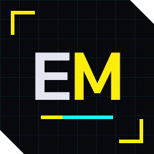

Open-source toolkits that work alone and work better together. Five of them cover the whole life of a mod. Each one has its own docs site and a section in the wiki.

REDagent New
The modding agent · powered by Claude
An AI assistant inside Cyberpunk 2077. Ask for a mod in a chat window over the game, and REDagent writes it, runs it, reads its log, checks the game's answers and fixes what's wrong, while you play. Every change is shown to you first and can be undone. Uses your own Anthropic API key.
Status: writes and fixes mods in game; early developer build
A Cyberpunk 2077 modding IDE built on VS Code. Browse the game's files, edit them, see textures and meshes, hear sounds and pack your mod, with an AI assistant working beside you.
Status: 0.9.0 on the VS Code Marketplace and Open VSX (preview)
One list of mods and four verbs: add, on/off, deploy, remove. Every deploy can be undone, and REDdeck shows conflicts inside mod archives, which file-level managers can't see.
Status: 0.26.3 on the VS Code Marketplace and Open VSX (preview); in daily use

REDbridge
The engine & AI bridge
Runs WolvenKit's proven C# engine as a local service. The same calls power REDcode and an MCP server, so AI assistants like Claude can browse archives, convert files and pack mods directly.
Status: 0.8.0 released; REDcode and REDdeck fetch it for you
Script Cyberpunk 2077 in TypeScript and JavaScript with npm, and build in-game HTML overlay apps. Mods attach to the running game, reload without a restart, and can be debugged while the game runs.
Status: 0.23.1. Overlay apps, Node mods, the game API, TweakDB, spaces and the MCP server pass in game; installs from source
Specialist toolkits built on the five above.

EDGEbuilder
The world builder
Build in Night City from inside the game. Search the game's own props, drop them where you look, and move, turn and scale them with a gizmo and a free camera.
Status: 0.3.2 released. Browse, drop, position and the editor camera passed in game; arrange and bake are planned
A sound studio for Cyberpunk 2077 modding that works beside REDcode. Open any game sound, cut, fade and shape it, and save it into your mod.
Status: in development; the sound editor is in hand testing, not released yet

EDGEmat
The material editor
Pick a jacket, click a layer, choose a colour and see it on the model. Or just tell an AI assistant "make this jacket red".
Status: planned; the design is done, no code yet
The EDGEmodders editor: one app with every EDGE tool built in. Today its extension pack installs REDcode, REDdeck and the HUD theme in VS Code in one go.
Status: extension pack 0.1.0 available (preview); the EDGEkit app is being built